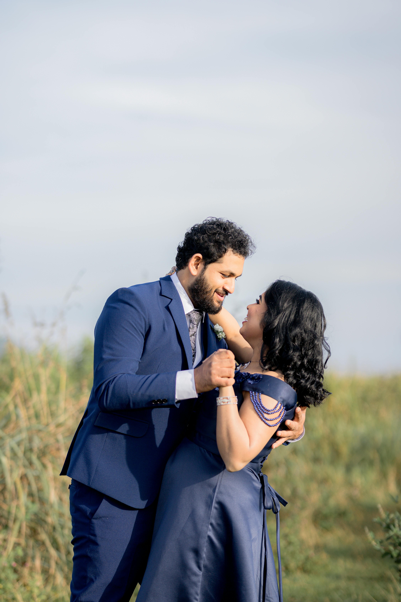
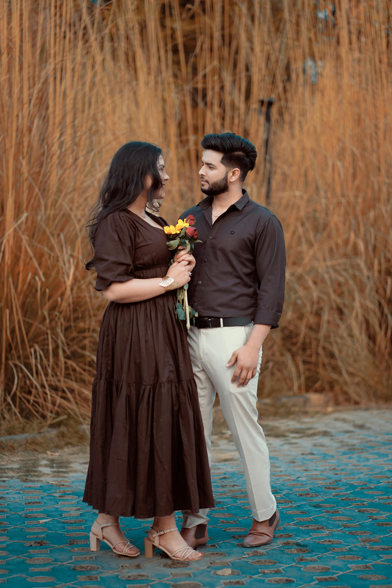
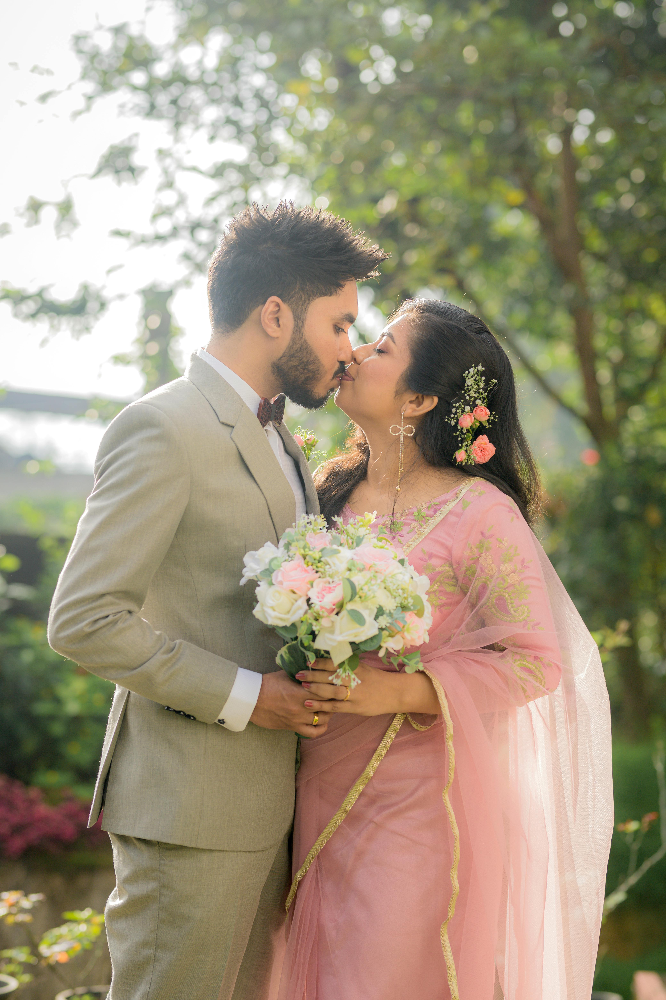
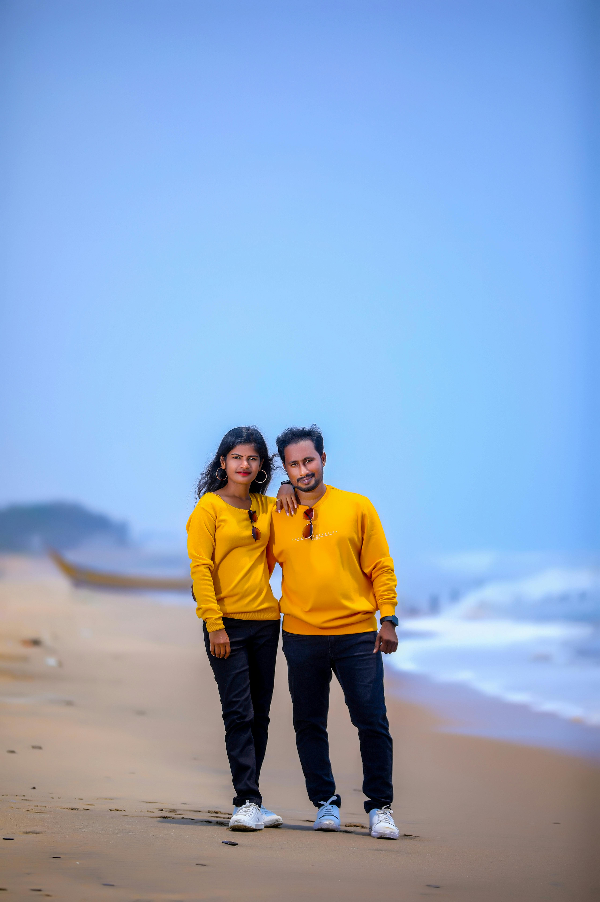

Alicia and Mark’s story began in a simple and unexpected way,
but it quickly turned into something meaningful.
What started as a casual connection soon grew into a friendship filled with laughter,
late-night conversations, and shared experiences that brought them closer together over time.

As they spent more time together, they discovered how well they balanced each other’s strengths and personalities.
Whether it was everyday routines or new adventures, they found joy in simply being together.
Through different seasons of life, they supported one another and built a strong foundation based on trust,
respect, and genuine care.
Over time, their relationship naturally grew into something deeper.
Family, friends, and shared memories all became an important part of their journey.
Through every milestone, they continued to choose each other and grow together as a team.
Now, as they prepare for their wedding day, Alicia and Mark are excited to begin this next chapter of their lives.
They are grateful for everyone who has supported them along the way and look forward to celebrating their future surrounded by the people they love most.

One of the things that has always stood out about Alicia and Mark's relationship is the way they bring out the best in each other. Alicia has a warm and caring nature that makes everyone around her feel seen and valued, while Mark brings a steady sense of humor and dedication that keeps things light even during life's harder moments. Together, they've created a relationship built not just on love, but on genuine friendship and mutual respect. The people closest to them have watched their bond grow stronger with every passing year, and it comes as no surprise to anyone who knows them that they've chosen to spend their lives together.

From weekend hikes in the mountains to lazy Sunday mornings, road trips and quiet evenings at home, Alicia and Mark have built a life full of moments worth remembering. They've learned to navigate challenges together with patience and grace, always coming out stronger on the other side. Their relationship is a reminder that the best partnerships are the ones where two people genuinely enjoy simply being together. As they step into this new chapter, they do so with full hearts, surrounded by the love and support of the people who have walked alongside them every step of the way.